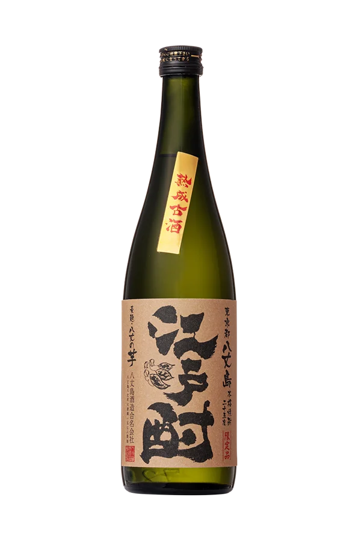
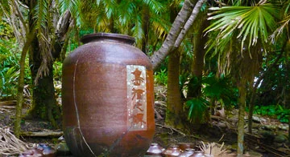
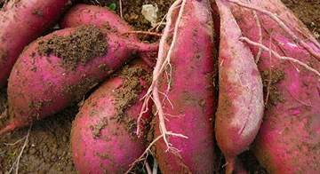

東京から287km、八丈島
八丈島 本格芋焼酎 江戸酎

島の話
1853年、薩摩の商人・丹宗庄右衛門が八丈島へ流されました。米の乏しい島に、彼はさつま芋から焼酎を造る方法を伝えます。いま島には、その造りを受け継ぐ蔵が残っています。

島の芋
白黄・紫・橙。島で採れる三系統のさつま芋をすべて使い、その年の出来に合わせて配合を変えています。だから江戸酎は、年ごとに味わいが少しずつちがいます。
島の飲み方
じっくり眠らせた江戸酎は、香りと甘みがまるい。
島の季節
江戸酎は年に一度の限定発売。島の芋が採れて、仕込み、眠らせて、秋の終わりに届きます。「今年の江戸酎は？」を、旅の話のように。
